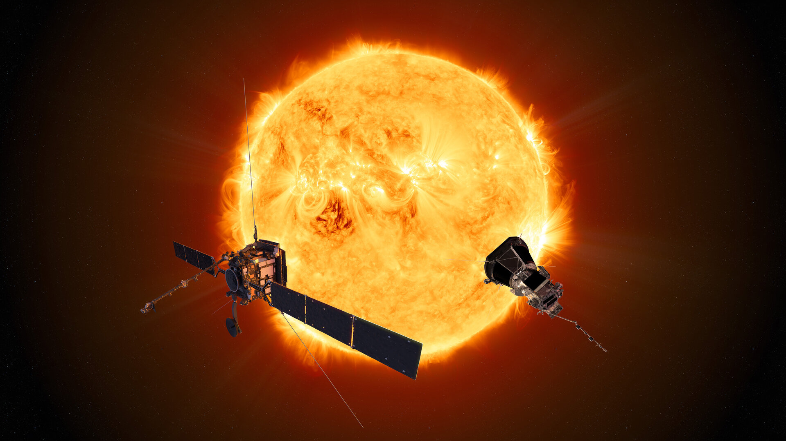

Science & Exploration
Solar Orbiter and Parker Solar Probe
ESA’s Solar Orbiter will be one of two complementary spacecraft studying the Sun at close proximity: it will join NASA’s Parker Solar Probe, which is already engaged in its mission.
Note the graphic is an artistic impression only; it is not to scale and does not depict a realistic configuration of the two missions. Read more about the similarities and differences here.